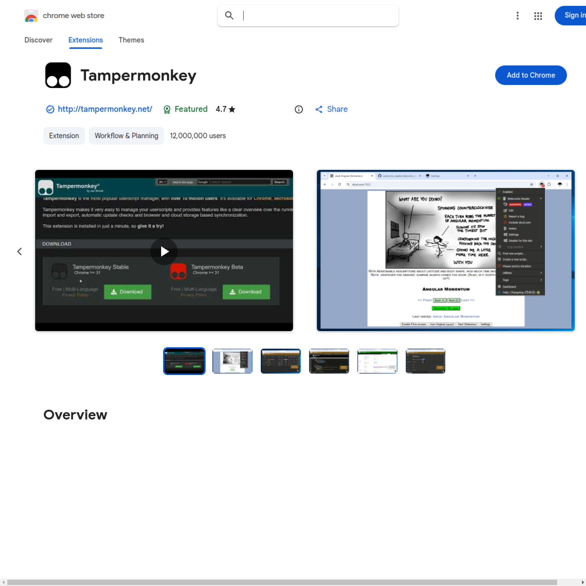
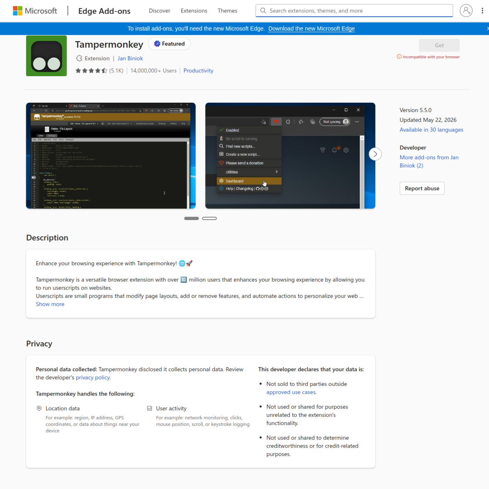
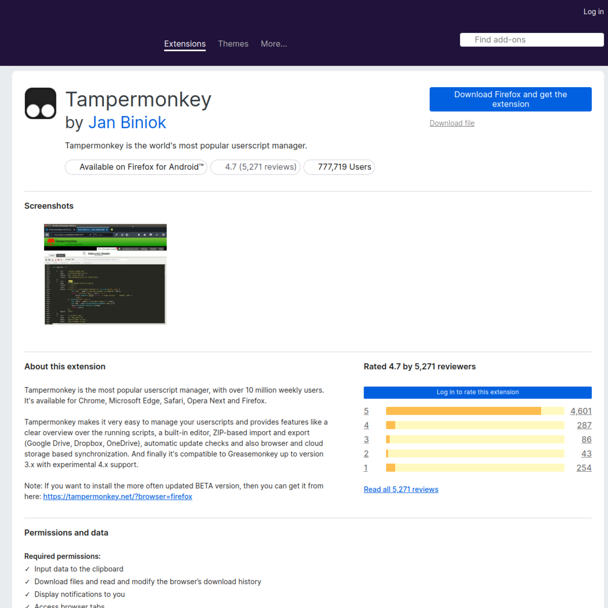
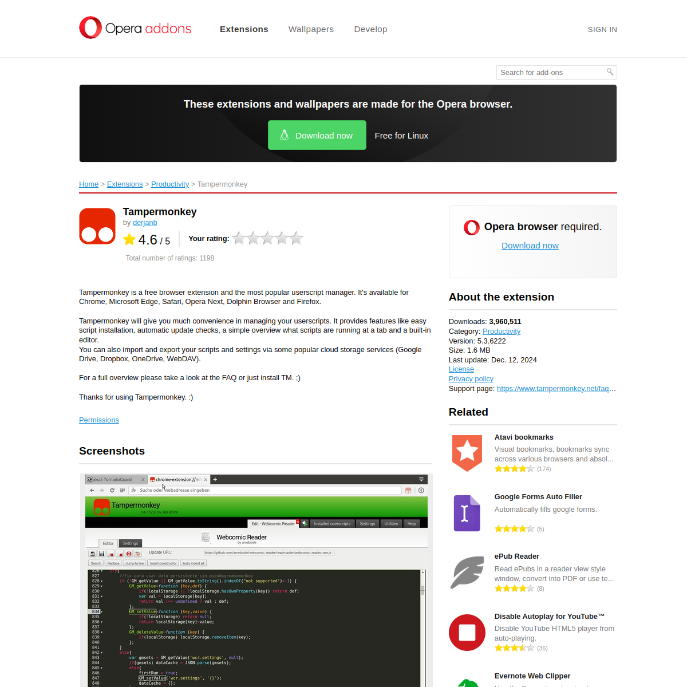

Userscript file location:
%LOCALAPPDATA%\OrganizedJihad\userscript\organized-jihad.user.js
Before You Start
- Close any old Hero Wars browser tabs before importing the script.
- Install Tampermonkey in your browser (links are opened by installer when enabled).
- In Tampermonkey, import
organized-jihad.user.jsfrom your installed userscript folder. - Confirm the script is enabled, then refresh Hero Wars.
Google Chrome

- Install Tampermonkey from the Chrome Web Store.
- Open Tampermonkey Dashboard -> Utilities -> Import from file.
- Select
organized-jihad.user.jsand click Install.
Microsoft Edge

- Install Tampermonkey from the Edge Add-ons store.
- Open the dashboard and import
organized-jihad.user.js. - Enable the script and refresh Hero Wars.
Mozilla Firefox

- Install Tampermonkey from addons.mozilla.org.
- Use Tampermonkey Utilities to import
organized-jihad.user.js. - Confirm script status is Enabled.
Opera
- Install Tampermonkey from Opera Add-ons.
- Open Tampermonkey Dashboard and import the script file.
- Enable script, then refresh Hero Wars.
Opera GX

- Install Tampermonkey from the Opera Add-ons page (same extension feed as Opera).
- Import
organized-jihad.user.jsfrom the userscript install folder. - Keep the script enabled for hero-wars.com domains.